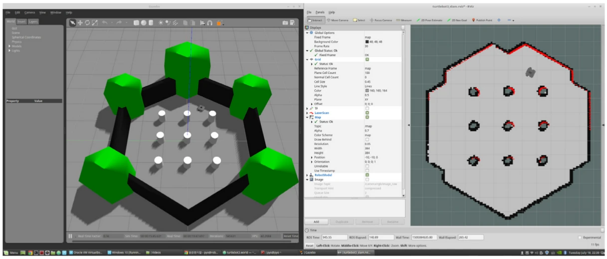
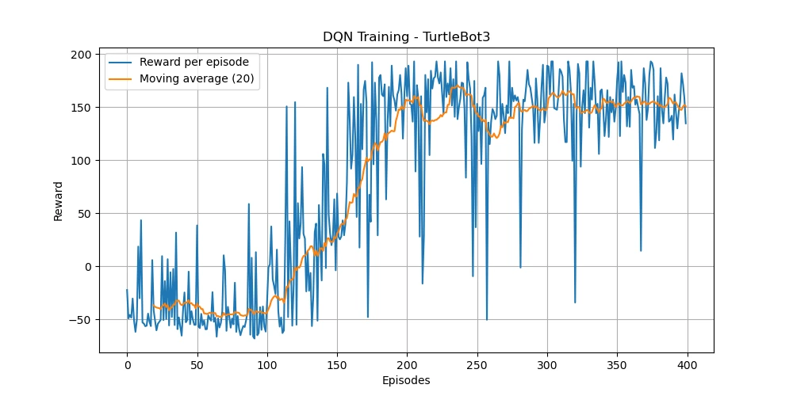
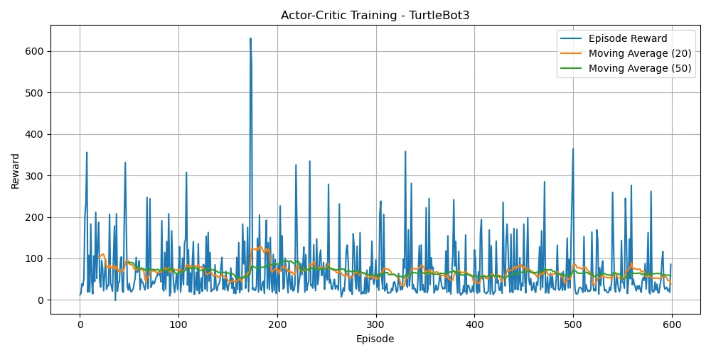
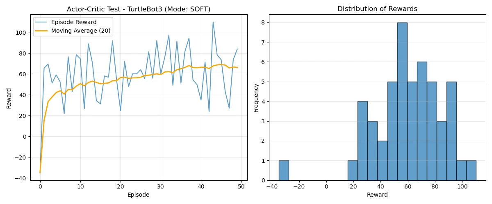
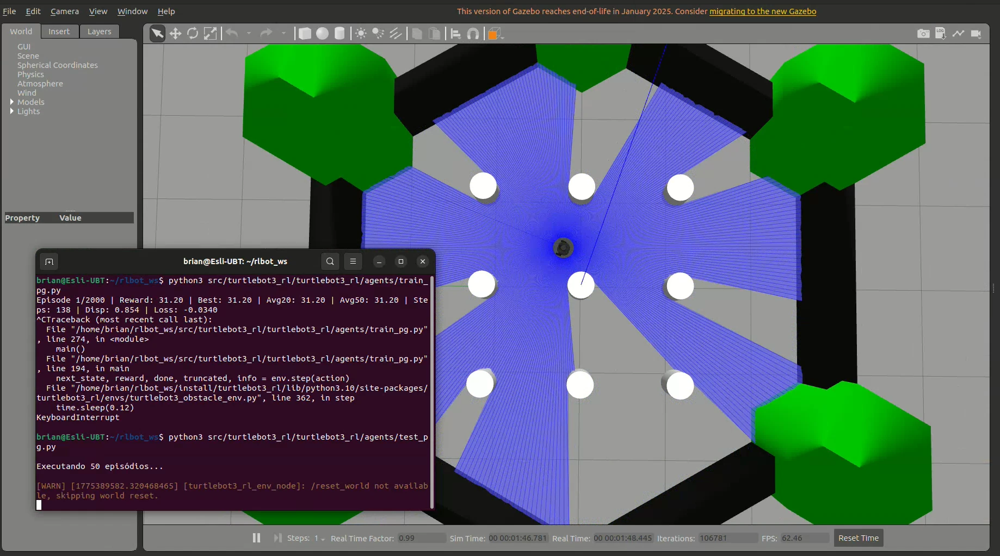
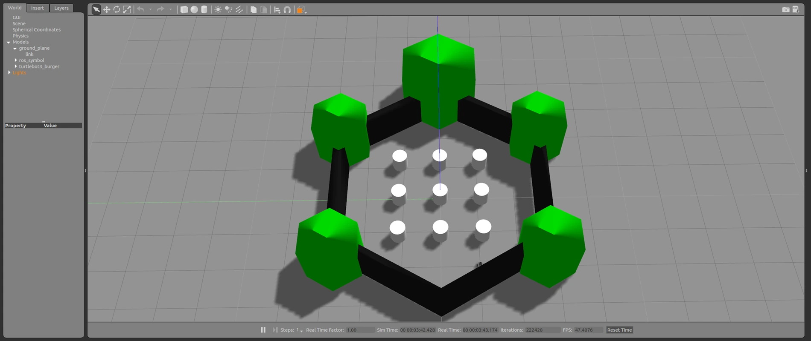

Observation
Vecteur de 20 valeurs : 16 distances minimales mesurées dans des secteurs LiDAR, plus la distance frontale minimale et moyenne, le déplacement total et le progrès du pas.
Deux volets complémentaires du travail sur TurtleBot3 : une architecture ROS 2 de livraison autonome avec Nav2 et un banc de simulation pour comparer trois méthodes d’apprentissage par renforcement sur la navigation et l’évitement d’obstacles. Le rapport détaillé ci-dessous concerne l’évaluation des algorithmes RL ; il ne prouve pas que la mission de livraison a été optimisée par ces algorithmes.

Deux volets complémentaires du travail sur TurtleBot3 : une architecture ROS 2 de livraison autonome avec Nav2 et un banc de simulation pour comparer trois méthodes d’apprentissage par renforcement sur la navigation et l’évitement d’obstacles. Le rapport détaillé ci-dessous concerne l’évaluation des algorithmes RL ; il ne prouve pas que la mission de livraison a été optimisée par ces algorithmes.
↗ Ouvrir le rapport RL complet (PDF, 17 pages)Une interface personnalisée relie le simulateur Gazebo, ROS 2 et Gymnasium. Le nœud robot lit le LiDAR et l’odométrie, envoie les commandes de vitesse et réinitialise le monde entre les épisodes.
Vecteur de 20 valeurs : 16 distances minimales mesurées dans des secteurs LiDAR, plus la distance frontale minimale et moyenne, le déplacement total et le progrès du pas.
Sept commandes discrètes pour Policy Gradient et Actor-Critic : avance rapide ou lente, rotation gauche/droite, avance avec virage gauche/droite et arrêt. Le DQN simple partait de trois actions.
La fonction favorise la progression, les déplacements utiles et les espaces libres. Elle pénalise la proximité des obstacles, les collisions et les rotations sans déplacement significatif.
Politique stochastique avec réseau 20 → 512 → 256 → 128 → 7, Adam (2×10⁻⁴), facteur γ = 0,99, régularisation d’entropie, ajustements successifs de la récompense et arrêt anticipé selon une moyenne glissante.
Résultat le plus convaincant : 35 essais sur 50 classés « excellents » selon les critères du rapport. Les moyennes glissantes des récompenses augmentent au cours de l’entraînement.


La tâche a été construite en deux étapes : 400 épisodes de navigation simple (trois actions, ε-greedy), puis un scénario étendu sur 800 épisodes avec passage par la zone centrale.
Dans la tâche simple, les récompenses se stabilisent autour de 150–170. Dans la tâche complexe, l’agent apprend souvent à tourner en boucle pour gagner une récompense sans atteindre le trajet souhaité.


Extracteur partagé 20 → 512 → 256 → 128, suivi de deux sorties : politique (actor) et valeur d’état (critic). Entraînement avec Adam, γ = 0,99 et régularisation d’entropie.
La stratégie apprise demeure prudente et locale ; les moyennes de récompense d’entraînement restent proches de 50–80, sans la progression obtenue avec Policy Gradient.


| Méthode | Observations validées |
|---|---|
| Policy Gradient | Meilleur comportement général ; 35/50 évaluations « excellentes » |
| Deep Q-Network | Réussite en tâche simple ; limites de récompense en tâche complexe |
| Actor-Critic | Comportement fonctionnel mais conservateur, faible couverture du plan |
Graphiques et figures extraits du rapport de projet de Victor Soares Mesquita et Esli Brian Silva Maciel. Comparaisons à interpréter dans les conditions de chaque protocole ; les scénarios DQN diffèrent de ceux de Policy Gradient et Actor-Critic.
Un gestionnaire reçoit une demande de livraison, lance la navigation vers une zone désignée et suit les états de mission : WAITING → MOVING → DELIVERED → RETURNING. Les outils Nav2, SLAM/AMCL, RViz et Gazebo servent à la navigation, à la localisation et à la simulation. Il s’agit de la seconde partie du dossier, présentée ici conjointement à l’étude RL.
Le choix de la récompense et des observations est aussi important que l’algorithme. Une récompense élevée ne garantit pas que le robot suit la trajectoire voulue ; les comportements cycliques du DQN ont montré la nécessité d’un objectif explicite. Le Policy Gradient a offert la meilleure navigation observée dans ce protocole, sans démontrer un optimum général.




Parcourez les images ; cliquez sur une figure pour l’agrandir.